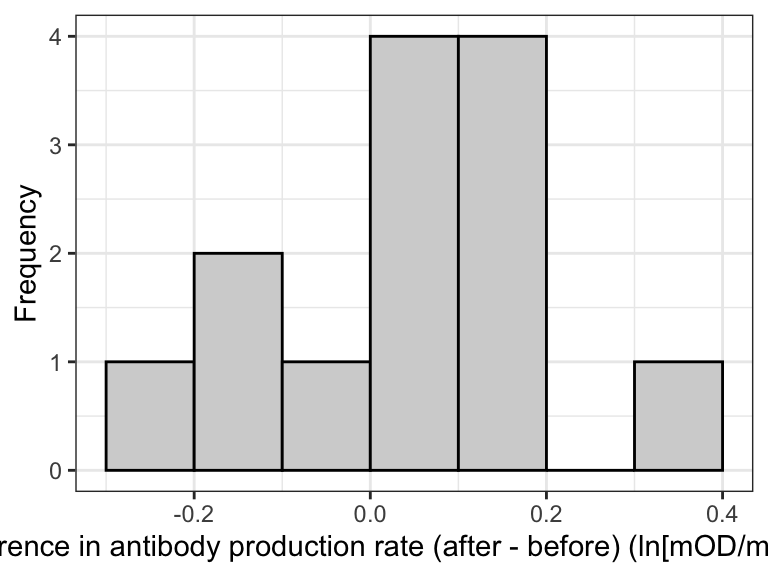
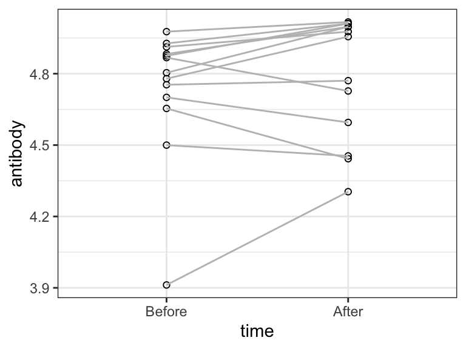
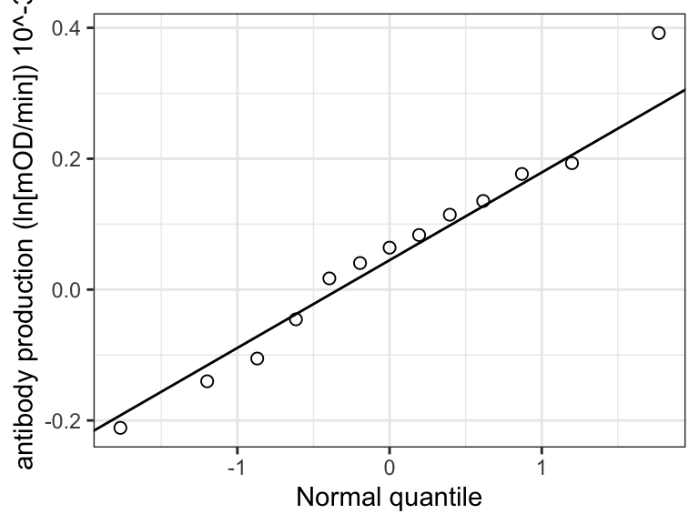
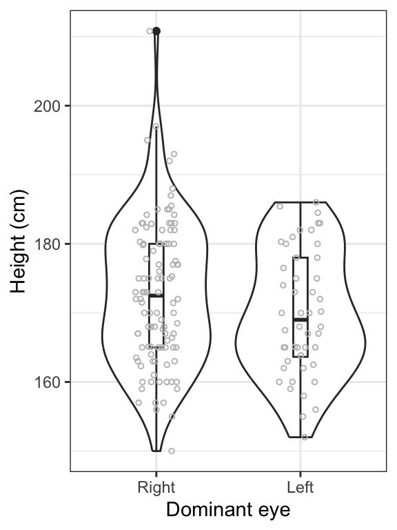
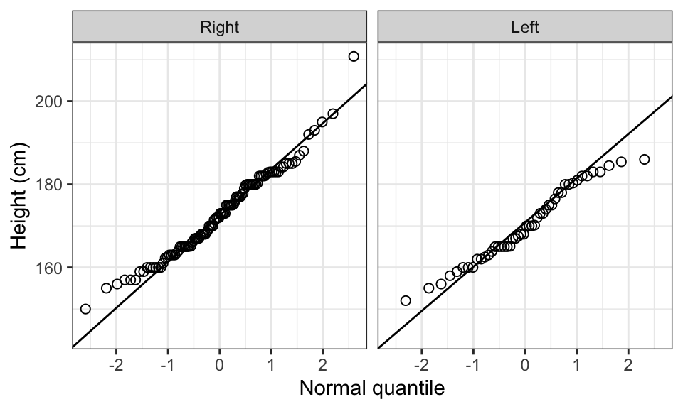

library(dplyr)
library(ggplot2)
library(readr)
library(tidyr)
library(knitr)
library(janitor)
library(biol202)
library(skimr)
library(car)13 Comparing means among two groups
Tutorial learning objectives
- Learn about paired and two-sample study designs for comparing the mean of a numeric response variable among two categories of a categorical variable (i.e. two groups)
- Learn about the paired t-test for testing a hypothesis about the difference between means in a paired design (\(d\))
- Learn about the two-sample t-test for testing a hypothesis about the difference between two population means (\(\mu_1 - \mu_2\))
- Learn the assumptions of the paired and two-sample t-tests
- Learn how to calculate an exact confidence interval for the difference between two means
- Learn the confidence interval approach for testing the plausibility of a hypothesized value for \(\mu_1 - \mu_2\)
13.1 Load packages and import data
Load the packages we need for this tutorial:
And we also need the broom package, which may be new to you.
library(broom)The following datasets are required:
- the “blackbird” dataset. These are the data associated with Example 12.2 in the text (page 330)
- the “students” dataset, describing characteristics of students from BIOL202 from several years back
data(blackbird)
data(students)13.2 Paired t-test
We’ll use the blackbird dataset for this example.
For 13 red-winged blackbirds, measurements of antibodies were taken before and after implantation with testosterone. Thus, the same bird was measured twice. Clearly, these measurements are not independent, hence the need for a “paired” t-test.
Let’s first have a look at the blackbird dataset:
blackbird
#> # A tibble: 26 × 3
#> blackbird time antibody
#> <dbl> <fct> <dbl>
#> 1 1 Before 4.65
#> 2 2 Before 3.91
#> 3 3 Before 4.91
#> 4 4 Before 4.50
#> 5 5 Before 4.80
#> 6 6 Before 4.88
#> 7 7 Before 4.88
#> 8 8 Before 4.78
#> 9 9 Before 4.98
#> 10 10 Before 4.87
#> # ℹ 16 more rowsThe data frame has 26 rows, and includes 3 variables, the first of which “blackbird” simply keeps track of the individual ID of blackbirds.
The response variable of interest, “antibody” represents antibody production rate measured in units of natural logarithm (ln) 10^{-3} optical density per minute (ln[mOD/min]).
The factor variable time that has two levels: “After” and “Before”.
These data are stored in tidy format, which, as you’ve learned, is the ideal format for storing data.
Sometimes you may get data in wide format, in which case, for instance, we would have a column for the “Before” antibody measurements and another column for the “After” measurements.
It is always preferable to work with long-format (tidy) data.
Consult the following webpage for instructions on using the tidyr package for converting between wide and long data formats.
With our data in the preferred long format, we can proceed with our hypothesis test, but because the hypothesis focuses on the differences in the paired measurements, we need to calculate those first!
13.2.1 Calculate differences
Let’s remind ourselves how the data are stored:
blackbird
#> # A tibble: 26 × 3
#> blackbird time antibody
#> <dbl> <fct> <dbl>
#> 1 1 Before 4.65
#> 2 2 Before 3.91
#> 3 3 Before 4.91
#> 4 4 Before 4.50
#> 5 5 Before 4.80
#> 6 6 Before 4.88
#> 7 7 Before 4.88
#> 8 8 Before 4.78
#> 9 9 Before 4.98
#> 10 10 Before 4.87
#> # ℹ 16 more rowsWe’ll use, for the first time, the pivot_wider function from the tidyr package.
The pivot_wider function essentially takes data stored in long format and converts it to wide format.
Note
The following code requires that there be at least one variable in the tibble that provides a unique identifier for each individual. In the “blackbird” tibble, this variable is “blackbird”. I have added an argument “id_cols = blackbird” to the code below to underscore the need for this type of identifier variable. The code will not work if such a variable does not exist in the tibble.
Here’s the code, then we’ll explain after:
blackbird.diffs <- blackbird %>%
pivot_wider(id_cols = blackbird, names_from = time, values_from = antibody) %>%
mutate(diffs = After - Before)In the preceding chunk, we:
- create a new object “blackbird.diffs” to hold our data
- the
pivot_widerfunction takes the following arguments:- “id_cols = blackbird”, which tells the function which variable in the tibble is used to keep track of the unique individuals (here, the “blackbird” variable)
- A categorical (grouping) variable “names_from” and creates new columns, one for each unique category
- A “values_from” variable; thus, in our case, we get 2 new columns (because there are 2 categories to the “time” variable: Before and After), and the values placed in those columns are the corresponding values of “antibody”.
- we then create a new variable “diff” that equals the values in the newly created “After” variable minus the values in the “Before” variable.
Note
TIP: In the blackbird example we have “Before” and “After” measurements of a variable, and we calculated the difference as “\(After - Before\)”, as this is a logical way to do it. It doesn’t really matter which direction you calculate the difference, but just be aware that you need to make clear how it was calculated, so that your interpretation is correct.
Let’s have a look at the result:
blackbird.diffs
#> # A tibble: 13 × 4
#> blackbird Before After diffs
#> <dbl> <dbl> <dbl> <dbl>
#> 1 1 4.65 4.44 -0.211
#> 2 2 3.91 4.30 0.392
#> 3 3 4.91 4.98 0.0641
#> 4 4 4.50 4.45 -0.0455
#> 5 5 4.80 5.00 0.193
#> 6 6 4.88 5.00 0.114
#> 7 7 4.88 5.01 0.135
#> 8 8 4.78 4.96 0.177
#> 9 9 4.98 5.02 0.0405
#> 10 10 4.87 4.73 -0.140
#> 11 11 4.75 4.77 0.0171
#> 12 12 4.70 4.60 -0.105
#> 13 13 4.93 5.01 0.0834We can see that some of the diffs values are negative, and some are positive. These would of course be switched in sign if we had calculated the differences as “\(Before - After\)”.
In any case, this is the new tibble and variable “diffs” that we’ll use for our hypothesis test!
13.2.2 Hypothesis statement
The hypotheses for this paired t-test focus on the mean of the differences between the paired measurements, denoted by \(\mu_d\):
H0: The mean change in antibody production after testosterone implants was zero (\(\mu_d = 0\)).
HA: The mean change in antibody production after testosterone implants was not zero (\(\mu_d \neq 0\)).
Steps to a hypothesis test:
- We’ll use an \(\alpha\) level of 0.05.
- It is a two-tailed alternative hypothesis
- We’ll visualize the data, and interpret the output
- We’ll use a paired t-test test to test the null hypothesis, because we’re dealing with “before and after” measurements taken on the same individuals, and drawing inferences about a population mean \(\mu_d\) using sample data
- We’ll check the assumptions of the test (see below)
- We’ll calculate our test statistic
- We’ll calculate the P-value associated with our test statistic
- We’ll calculate a 95% confidence interval for the mean difference
- We’ll provide a good concluding statement that includes a 95% confidence interval for the mean difference
13.2.3 A graph to accompany a paired t-test
The best way to visualize the data for a paired t-test is to create a histogram of the calculated differences between the paired observations.
blackbird.diffs %>%
ggplot(aes(x = diffs)) +
geom_histogram(binwidth = 0.1, boundary = -0.3,
color = "black", fill = "lightgrey",) +
xlab("Difference in antibody production rate (after - before) (ln[mOD/min]) 10^-3") +
ylab("Frequency") +
theme_bw()
With such a small sample size (13), the histogram is not particularly informative. But we do see most observations are just above zero.
OPTIONAL
Another optional but nice way to visualize paired data is using a paired plot.
blackbird %>%
ggplot(aes(x = time, y = antibody)) +
geom_point(shape = 1, size = 1.5) +
geom_line(aes(group = blackbird), color = "grey") +
theme_bw()
OPTIONAL
Notice that the “After” group is plotted on the left, which is a bit counter-intuitive. We could optionally change that by changing how R recognizes the “order” of the “time” variable:
blackbird$time <- ordered(blackbird$time, levels = c("Before", "After"))Then repeat the code above to create the paired plot.
13.2.4 Assumptions of the paired t-test
(Updated October 31, 2024)
The assumptions of the paired t-test are the same as the assumptions for the one-sample t-test, except they pertain to the difference:
- the sampling units are randomly sampled from the population
- the mean difference has a normal distribution in the population (each group of measurements need not be normally distributed)
As instructed in the checking assumptions tutorial, we should use a normal quantile plot to visually check the normal distribution assumption, using the calculated differences.
blackbird.diffs %>%
ggplot(aes(sample = diffs)) +
stat_qq(shape = 1, size = 2) +
stat_qq_line() +
xlab("Normal quantile") +
ylab("antibody production (ln[mOD/min]) 10^-3") +
theme_bw()
We see that most of the lines are close to the line, with one point near the top right that is a bit off…
A reasonable statement would be:
“The normal quantile plot shows that the data generally fall close to the line (except perhaps the highest value), indicating that the normality assumption is reasonably met.”
But if you’re feeling uncertain, we can follow this with a Shapiro-Wilk Normality Test, which tests the null hypothesis that the data are sampled from a normal distribution.
shapiro.result <- shapiro.test(blackbird.diffs$diffs)
shapiro.result.tidy <- tidy(shapiro.result)
shapiro.result.tidy
#> # A tibble: 1 × 3
#> statistic p.value method
#> <dbl> <dbl> <chr>
#> 1 0.978 0.969 Shapiro-Wilk normality testGiven that the P-value is large (and much greater than 0.05), there is no reason to reject the null hypothesis. Thus, our normality assumption is met.
When testing the normality assumption using the Shapiro-Wilk test, there is no need to conduct all the steps associated with a hypothesis test. Simply report the results of the test (the test statistic value and the associated P-value).
For instance:
“A Shapiro-Wilk test revealed no evidence against the assumption that the data are drawn from a normal distribution (W = 0.98, P-value = 0.969).”
13.2.5 Conduct the test
We can conduct a paired t-test in two different ways:
conduct a one-sample t-test on the differences using the
t.testfunction and methods you learned in a previous tutorial.conduct a paired t-test using the
t.testfunction and the argumentpaired = TRUE.
(1) One-sample t-test on the differences
Let’s proceed with the test as we’ve previously learned.
Here we make sure to set the null hypothesized value of “mu” to zero in the argument for the t.test function:
blackbird.ttest <- blackbird.diffs %>%
select(diffs) %>%
t.test(mu = 0, alternative = "two.sided", conf.level = 0.95) Now have a look at the result:
blackbird.ttest
#>
#> One Sample t-test
#>
#> data: .
#> t = 1.2435, df = 12, p-value = 0.2374
#> alternative hypothesis: true mean is not equal to 0
#> 95 percent confidence interval:
#> -0.04134676 0.15128638
#> sample estimates:
#> mean of x
#> 0.05496981The observed P-value for our test is larger than our \(\alpha\) level of 0.05. We therefore fail to reject the null hypothesis.
Note
The values of t and of the lower and upper confidence limits may be reversed in sign, if you conducted your calculation of differences in the alternative way. Specifically, you may get t = -1.2434925, and confidence limits of -0.1512864 and 0.0413468. This is totally fine!
(2) Paired t-test
(Updated October 31, 2024)
Here again we’ll use the wide-format tibble blackbird.diffs, using this approach:
blackbird.paired.ttest <- t.test(x = blackbird.diffs$Before, y = blackbird.diffs$After,
paired = TRUE, alternative = 'two.sided', conf.level = 0.95)Here’s an explanation:
- we create a new object “blackbird.paried.ttest” to store our results in
- we run the
t.testfunction with the arguments as follows:- we specify x equal to the “Before” variable, and y equal to the “After” variable
- we have the “paired = TRUE” argument, telling the function that this is a paired design
- we specify that this is a two-sided test with “alternative = ‘two.sided’
- finally we use “conf.level = 0.95” which corresponds to an \(\alpha = 0.05\)
Let’s look at the result:
blackbird.paired.ttest
#>
#> Paired t-test
#>
#> data: blackbird.diffs$Before and blackbird.diffs$After
#> t = -1.2435, df = 12, p-value = 0.2374
#> alternative hypothesis: true mean difference is not equal to 0
#> 95 percent confidence interval:
#> -0.15128638 0.04134676
#> sample estimates:
#> mean difference
#> -0.05496981The output is identical to what we got when we applied a 1-sample t-test on the differences!
Note
The values of t and of the lower and upper confidence limits may be reversed in sign, if you conducted your calculation of differences in the alternative way. Specifically, you may get t = -1.2434925, and confidence limits of -0.1512864 and 0.0413468. This is totally fine!
13.2.6 Concluding statement
Here’s an example of a reasonable concluding statement, and this can apply for either of the two methods used above (note that in either case we call the test a “paired t-test, even if we used the one-sample t-test on the differences):
We have no reason to reject the null hypothesis that the mean change in antibody production after testosterone implants was zero (paired t-test; t = -1.24; df = 12; P = 0.237; 95% confidence interval for the difference: -0.151 \(< \mu_d <\) 0.041).
13.3 Two sample t-test
Have a look at the students dataset:
students %>%
skim_without_charts()| Name | Piped data |
| Number of rows | 154 |
| Number of columns | 6 |
| _______________________ | |
| Column type frequency: | |
| factor | 3 |
| numeric | 3 |
| ________________________ | |
| Group variables | None |
Variable type: factor
| skim_variable | n_missing | complete_rate | ordered | n_unique | top_counts |
|---|---|---|---|---|---|
| dominant_hand | 0 | 1 | FALSE | 2 | Rig: 139, Lef: 15 |
| dominant_foot | 0 | 1 | FALSE | 2 | Rig: 137, Lef: 17 |
| dominant_eye | 0 | 1 | FALSE | 2 | Rig: 106, Lef: 48 |
Variable type: numeric
| skim_variable | n_missing | complete_rate | mean | sd | p0 | p25 | p50 | p75 | p100 |
|---|---|---|---|---|---|---|---|---|---|
| height_cm | 0 | 1 | 171.97 | 10.03 | 150 | 165.00 | 171.48 | 180.0 | 210.8 |
| head_circum_cm | 0 | 1 | 57.17 | 1.90 | 53 | 55.91 | 57.00 | 58.5 | 63.0 |
| number_of_siblings | 0 | 1 | 1.71 | 1.05 | 0 | 1.00 | 2.00 | 2.0 | 6.0 |
These data include measurements taken on 154 students in BIOL202 a few years ago.
We’ll use the “height” and “dominant_eye” variables for this section.
OPTIONAL
Note that the categories in the dominant_eye variable are “l” and “r”, denoting “left” and “right”.
We can use the unique function to tell us all unique values of a categorical variable:
students %>%
select(dominant_eye) %>%
unique()
#> # A tibble: 2 × 1
#> dominant_eye
#> <fct>
#> 1 Right
#> 2 LeftLet’s change these to be more informative, “Left” and “Right”.
We can do this with the recode_factor function from the dplyr package, in conjunction with the familiar mutate function used to create a new variable (though here we’re just over-writing an existing variable):
students <- students %>%
mutate(dominant_eye = recode_factor(dominant_eye, r = "Right", l = "Left"))13.3.1 Hypothesis statement
H0: Mean height is the same among students with left dominant eyes and right dominant eyes (\(\mu_L = \mu_R\)).
HA: Mean height is not the same among students with left dominant eyes and right dominant eyes (\(\mu_L \ne \mu_R\)).
Steps to a hypothesis test:
- We’ll use an \(\alpha\) level of 0.05.
- It is a two-tailed alternative hypothesis
- We’ll provide a table of descriptive statistics for each group
- We’ll visualize the data, and interpret the output
- We’ll use a 2-sample t-test to test the null hypothesis, because we’re dealing with numerical measurements taken on independent within two independent groups, and drawing inferences about population means \(\mu\) using sample data
- We’ll check the assumptions of the test (see below)
- We’ll calculate our test statistic
- We’ll calculate the P-value associated with our test statistic
- We’ll calculate a 95% confidence interval for the difference (\(\mu_L - \mu_R\))
- We’ll provide a good concluding statement that includes a 95% confidence interval for the mean difference (\(\mu_L - \mu_R\))
13.3.2 A table of descriptive statistics
When we are analyzing a numeric response variable in relation to a categorical variable with two or more categories, it’s good practice to provide a table of summary (or “descriptive”) statistics (including confidence intervals for the mean) for the numeric variable grouped by the categories.
In a previous tutorial we learned how to calculate descriptive statistics for a numeric variable grouped by a categorical variable. In another tutorial we also learned how to calculate confidence intervals for a numeric variable.
We’ve also learned that the t.test function returns a confidence interval for us.
Let’s use all these skills to generate a table of summary statistics for the “height_cm” variable, grouped by “dominant_eye”:
height.stats <- students %>%
group_by(dominant_eye) %>%
summarise(
Count = sum(!is.na(height_cm)),
Count_NA = sum(is.na(height_cm)),
Mean = mean(height_cm, na.rm = TRUE),
SD = sd(height_cm, na.rm = TRUE),
SEM = SD/sqrt(Count),
Low_95_CL = t.test(height_cm, conf.level = 0.95)$conf.int[1],
Up_95_CL = t.test(height_cm, conf.level = 0.95)$conf.int[2]
)The only unfamiliar code in the preceding chunk is the last two lines:
- we use the
t.testfunction to calculate the lower and upper confidence limits. Specifically:- after the closing parenthesis to the
t.testfunction, we include “$conf.int[1]”, and this simply extracts the first value (lower limit) of the calculated confidence limits from thet.testoutput - we do the same for the upper confidence limit, but this time we include “$conf.int[2]”
- after the closing parenthesis to the
Now let’s have a look at the table, using the kable function to produce a nice table.
NOTE here I am rotating the table so that it fits on the page. To do this, use the t function as follows:
kable(t(height.stats), digits = 4)| dominant_eye | Right | Left |
| Count | 106 | 48 |
| Count_NA | 0 | 0 |
| Mean | 172.8368 | 170.0598 |
| SD | 10.397638 | 8.964659 |
| SEM | 1.009908 | 1.293937 |
| Low_95_CL | 170.8343 | 167.4567 |
| Up_95_CL | 174.8393 | 172.6629 |
It is best to NOT rotate the table, but it is fine to do so if your table goes off the page!
We’ll learn a better way to get around this later.
13.3.3 A graph to accompany a 2-sample t-test
We learned in an earlier tutorial that we can use a stripchart, violin plot, or boxplot to visualize the association between a numerical response variable and a categorical explanatory variable. Better yet, we can do the combined violin & boxplot.
Here we want to visualize height in relation to dominant eye (Left or Right). We can use the information provided in our descriptive stats table to get the sample sizes for the groups (which we need to report in the figure heading).
students %>%
ggplot(aes(x = dominant_eye, y = height_cm)) +
geom_violin() +
geom_boxplot(width = 0.1) +
geom_jitter(colour = "grey", size = 1, shape = 1, width = 0.15) +
xlab("Dominant eye") +
ylab("Height (cm)") +
theme_bw()
Interpretation
We can see in the preceding figure that heights are generally similar between students with left dominant eyes and those with right dominant eyes. However, it appears that the spread of the heights is greater among students with right dominant eyes. We will need to be careful about the equal-variance assumption for the 2-sample t-test.
13.3.4 Assumptions of the 2-sample t-test
The assumptions of the 2-sample t-test are as follows:
- each of the two samples is a random sample from its population
- the numerical variable is normally distributed in each population
- the variance (and thus standard deviation) of the numerical variable is the same in both populations
Test for normality
Now let’s check the normality assumption by plotting a normal quantile plot for each group.
We’ll introduce the facet_grid function that enables plotting of side-by-side panels according to a grouping variable.
students %>%
ggplot(aes(sample = height_cm)) +
stat_qq(shape = 1, size = 2) +
stat_qq_line() +
facet_grid(~ dominant_eye) +
xlab("Normal quantile") +
ylab("Height (cm)") +
theme_bw()
A reasonable statement would be:
“The normal quantile plots show that student height is generally normally distributed for students with left or right dominant eyes. There is one observation among the right-dominant eye students that is a bit off the line.”
Test for equal variances
Now we need to test the assumption of equal variance among the groups, using Levene’s Test as we learned in the checking assumptions tutorial.
height.vartest <- leveneTest(height_cm ~ dominant_eye, data = students)
height.vartest
#> Levene's Test for Homogeneity of Variance (center = median)
#> Df F value Pr(>F)
#> group 1 0.907 0.3424
#> 152It uses a test statistic “F”, and we see here that the P-value associated with the test statistic is larger than 0.05, so we don’t reject the implied null hypothesis that the variances are equal.
We state “A Levene’s test showed no evidence against the assumption of equal variance (F = 0.91; P-value = 0.342).”
Thus, we’ll proceed with conducting the 2-sample t-test.
13.3.5 Conduct the 2-sample t-test
We use the t.test function again for this test.
height.ttest <- students %>%
t.test(height_cm ~ dominant_eye,
data = ., var.equal = TRUE, conf.level = 0.95)The only difference from the implementation used in the paired t-test is:
- we include the “var.equal = TRUE” argument
We again include the argument “data = .”, which tells the t.test function that whatever data was passed to it from the preceding line is what will be used
We’ll learn a bit later what to due when the equal variance assumption is not met.
Let’s look at the result:
height.ttest
#>
#> Two Sample t-test
#>
#> data: height_cm by dominant_eye
#> t = 1.6, df = 152, p-value = 0.1117
#> alternative hypothesis: true difference in means between group Right and group Left is not equal to 0
#> 95 percent confidence interval:
#> -0.6521529 6.2061545
#> sample estimates:
#> mean in group Right mean in group Left
#> 172.8368 170.0598We see that the test produced a P-value greater than \(\alpha\), so we fail to reject the null hypothesis.
Note also that the output includes a confidence interval for the difference in group means. We need to include this in our concluding statement.
13.3.6 Concluding statement
Here’s an example of a concluding statement:
On average, students with left dominant eyes are similar in height to students with right dominant eyes (Figure 19.4) (2-sample t-test; t = 1.6; df = 152; P-value = 0.112; 95% confidence interval for the difference in height -0.652 \(< \mu_d <\) 6.206).
13.4 When assumptions aren’t met
If the normal distribution assumption is violated, and you are unable to find a transformation that works (see the Checking assumptions and data transformations tutorial), then you can try a non-parametric test.
A tutorial on non-parametric tests is forthcoming, but not available yet. Consult chapter 13 in the Whitlock & Schluter text, and this website for some R examples.
If the equal-variance assumption is violated for the 2-sample t-test, then you can set the “var.equal” argument to “FALSE” in the t.test function, in which case the function implements a “Welch’s t-test”.
For instance, let’s pretend that the height data did not exhibit equal variance among left- and right- dominant eye students, here’s the appropriate code:
height.ttest.unequal.var <- students %>%
t.test(height_cm ~ dominant_eye,
data = ., var.equal = FALSE, conf.level = 0.95)
height.ttest.unequal.var
#>
#> Welch Two Sample t-test
#>
#> data: height_cm by dominant_eye
#> t = 1.6919, df = 104.37, p-value = 0.09366
#> alternative hypothesis: true difference in means between group Right and group Left is not equal to 0
#> 95 percent confidence interval:
#> -0.4778181 6.0318197
#> sample estimates:
#> mean in group Right mean in group Left
#> 172.8368 170.0598